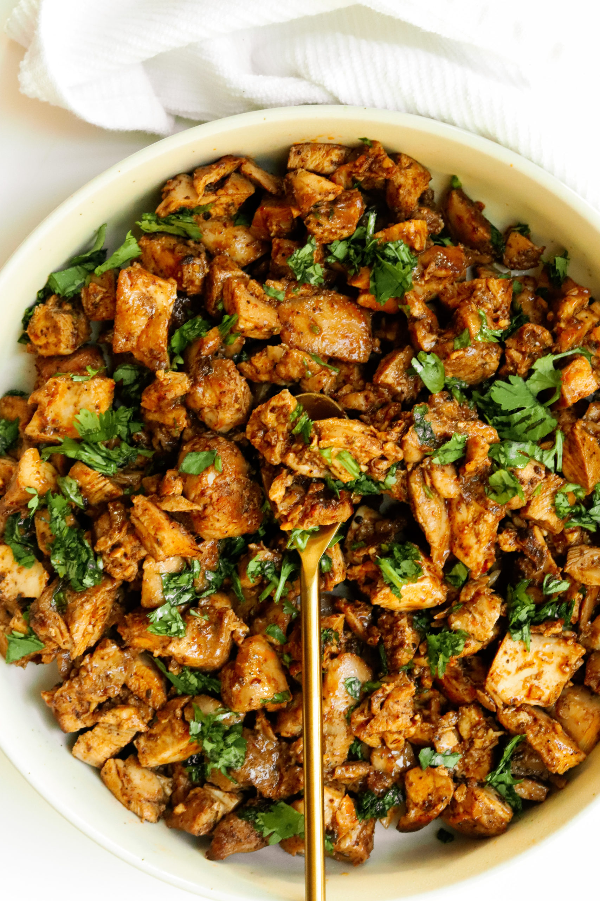

This page is dedicated to places I find inspiration for cooking and restaurants to visit.
Moribyan
I stumbled upon Moribyan on Instagram and all her recipes always looked SO good. She's best known for dupes of popular fast foods eg. chipotle, chic fil a etc. She also has lots of her own recipes that are inspired by her own North African Background. Her website is usally the first place I'll visit when I want to find a new recipe to try out. Her recipes are easy to follow and consistently really good. The most recent recipe of hers that I made was her chipotle chicken copy cat. I'll insert the link to that here later. I read her about me page on her blog and she said she started her food blog in college too.
Chipotle Chicken Copy Cat Moribyan Source Link
Food Network App
The Food Network App is a must have. It has recipes for every dish you could ever think of. I think the best part of the Food Network app is that they let you choose the app icon on your homescreen. They give you the option to pick any of the Food Network chefs, so of course I chose Guy Fieri. But in all seriousness it is a good place to find easy to follow recipes and the app is really user friendly.
Honorable Mention: Yelp
Anytime anyone suggests a new restaurant the first thing I do is Yelp it. This usually leads to me falling down a Yelp rabbit hole looking at all the restaurants in my area I haven't tried and adding them to my list of places to go. I think it's important to mention that you should take all Yelp reviews with a grain of salt because some people overexaggerate and some people are just unreasonable.